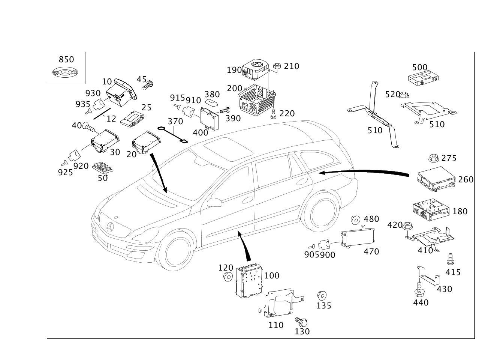

| № | Артикул | Название | Кол. | Примечание | Ограничение |
|---|---|---|---|---|---|
| 10 | A 251 820 94 89 | Устройство управления | 1 | [697] ДЕТАЛЬ ПОСТАВЛЯЕТСЯ ТОЛЬКО/ИЛИ ТАКЖЕ КАК ЗАП.ЧАСТЬ | 523 |
| 10 | A 251 820 78 89 | Устройство управления (OPERATING UNIT) | 1 | [697] ДЕТАЛЬ ПОСТАВЛЯЕТСЯ ТОЛЬКО/ИЛИ ТАКЖЕ КАК ЗАП.ЧАСТЬ | 523 |
| 10 | A 251 870 55 94 | Устройство управления | 1 | [525] ОБРАТНАЯ СВЯЗЬ ОБЯЗАТЕЛЬНО ЧЕРЕЗ СИСТЕМУ РАСЧЕТОВ SYREK В ФРГ ДЕТАЛЬ ЗАКАЗЫВАТЬ КАК ВОССТАНОВЛЕННУЮ ДЕТАЛЬ [697] ДЕТАЛЬ ПОСТАВЛЯЕТСЯ ТОЛЬКО/ИЛИ ТАКЖЕ КАК ЗАП.ЧАСТЬ | 523 |
| 10 | A 251 870 57 94 | Устройство управления | 1 | [525] ОБРАТНАЯ СВЯЗЬ ОБЯЗАТЕЛЬНО ЧЕРЕЗ СИСТЕМУ РАСЧЕТОВ SYREK В ФРГ ДЕТАЛЬ ЗАКАЗЫВАТЬ КАК ВОССТАНОВЛЕННУЮ ДЕТАЛЬ [697] ДЕТАЛЬ ПОСТАВЛЯЕТСЯ ТОЛЬКО/ИЛИ ТАКЖЕ КАК ЗАП.ЧАСТЬ | 523 |
| 10 | A 251 870 58 94 | Элемент управления | 1 | [525] ОБРАТНАЯ СВЯЗЬ ОБЯЗАТЕЛЬНО ЧЕРЕЗ СИСТЕМУ РАСЧЕТОВ SYREK В ФРГ ДЕТАЛЬ ЗАКАЗЫВАТЬ КАК ВОССТАНОВЛЕННУЮ ДЕТАЛЬ [697] ДЕТАЛЬ ПОСТАВЛЯЕТСЯ ТОЛЬКО/ИЛИ ТАКЖЕ КАК ЗАП.ЧАСТЬ | 523 |
| 10 | A 251 900 50 00 | Блок управления (CONTROL UNIT) | 1 | [525] ОБРАТНАЯ СВЯЗЬ ОБЯЗАТЕЛЬНО ЧЕРЕЗ СИСТЕМУ РАСЧЕТОВ SYREK В ФРГ ДЕТАЛЬ ЗАКАЗЫВАТЬ КАК ВОССТАНОВЛЕННУЮ ДЕТАЛЬ [697] ДЕТАЛЬ ПОСТАВЛЯЕТСЯ ТОЛЬКО/ИЛИ ТАКЖЕ КАК ЗАП.ЧАСТЬ | 523 |
| 10 | A 251 820 10 79 | Радиоприемник | 1 | [697] ДЕТАЛЬ ПОСТАВЛЯЕТСЯ ТОЛЬКО/ИЛИ ТАКЖЕ КАК ЗАП.ЧАСТЬ | 525 |
| 10 | A 251 820 15 79 | Устройство управления | 1 | [697] ДЕТАЛЬ ПОСТАВЛЯЕТСЯ ТОЛЬКО/ИЛИ ТАКЖЕ КАК ЗАП.ЧАСТЬ | 525 |
| 10 | A 251 820 25 79 | Устройство управления | 1 | HU [697] ДЕТАЛЬ ПОСТАВЛЯЕТСЯ ТОЛЬКО/ИЛИ ТАКЖЕ КАК ЗАП.ЧАСТЬ | 525 |
| 10 | A 251 870 40 89 | Элемент управления | 1 | [697] ДЕТАЛЬ ПОСТАВЛЯЕТСЯ ТОЛЬКО/ИЛИ ТАКЖЕ КАК ЗАП.ЧАСТЬ | 525 |
| 10 | A 251 870 78 89 | Устройство управления | 1 | [525] ОБРАТНАЯ СВЯЗЬ ОБЯЗАТЕЛЬНО ЧЕРЕЗ СИСТЕМУ РАСЧЕТОВ SYREK В ФРГ ДЕТАЛЬ ЗАКАЗЫВАТЬ КАК ВОССТАНОВЛЕННУЮ ДЕТАЛЬ [697] ДЕТАЛЬ ПОСТАВЛЯЕТСЯ ТОЛЬКО/ИЛИ ТАКЖЕ КАК ЗАП.ЧАСТЬ | 525 |
| 10 | A 251 870 21 90 | Устройство управления (OPERATING UNIT) | 1 | [525] ОБРАТНАЯ СВЯЗЬ ОБЯЗАТЕЛЬНО ЧЕРЕЗ СИСТЕМУ РАСЧЕТОВ SYREK В ФРГ ДЕТАЛЬ ЗАКАЗЫВАТЬ КАК ВОССТАНОВЛЕННУЮ ДЕТАЛЬ [697] ДЕТАЛЬ ПОСТАВЛЯЕТСЯ ТОЛЬКО/ИЛИ ТАКЖЕ КАК ЗАП.ЧАСТЬ | 525 |
| 10 | A 251 820 09 79 | Радиоприемник | 1 | [697] ДЕТАЛЬ ПОСТАВЛЯЕТСЯ ТОЛЬКО/ИЛИ ТАКЖЕ КАК ЗАП.ЧАСТЬ | 527 |
| 10 | A 251 820 22 79 | Радиоприемник | 1 | HU [697] ДЕТАЛЬ ПОСТАВЛЯЕТСЯ ТОЛЬКО/ИЛИ ТАКЖЕ КАК ЗАП.ЧАСТЬ | 527 |
| 10 | A 251 820 26 79 | Устройство управления | 1 | HU [697] ДЕТАЛЬ ПОСТАВЛЯЕТСЯ ТОЛЬКО/ИЛИ ТАКЖЕ КАК ЗАП.ЧАСТЬ | 527+-(863/218) |
| 10 | A 251 870 34 89 | Элемент управления | 1 | [697] ДЕТАЛЬ ПОСТАВЛЯЕТСЯ ТОЛЬКО/ИЛИ ТАКЖЕ КАК ЗАП.ЧАСТЬ | 527+-(863/218) |
| 10 | A 251 870 80 89 | Устройство управления | 1 | [525] ОБРАТНАЯ СВЯЗЬ ОБЯЗАТЕЛЬНО ЧЕРЕЗ СИСТЕМУ РАСЧЕТОВ SYREK В ФРГ ДЕТАЛЬ ЗАКАЗЫВАТЬ КАК ВОССТАНОВЛЕННУЮ ДЕТАЛЬ [697] ДЕТАЛЬ ПОСТАВЛЯЕТСЯ ТОЛЬКО/ИЛИ ТАКЖЕ КАК ЗАП.ЧАСТЬ | 527+-(863/218) |
| 10 | A 251 870 27 90 | Устройство управления | 1 | [525] ОБРАТНАЯ СВЯЗЬ ОБЯЗАТЕЛЬНО ЧЕРЕЗ СИСТЕМУ РАСЧЕТОВ SYREK В ФРГ ДЕТАЛЬ ЗАКАЗЫВАТЬ КАК ВОССТАНОВЛЕННУЮ ДЕТАЛЬ [697] ДЕТАЛЬ ПОСТАВЛЯЕТСЯ ТОЛЬКО/ИЛИ ТАКЖЕ КАК ЗАП.ЧАСТЬ | 527+-(863/218) |
| 10 | A 251 870 53 90 | Устройство управления | 1 | [525] ОБРАТНАЯ СВЯЗЬ ОБЯЗАТЕЛЬНО ЧЕРЕЗ СИСТЕМУ РАСЧЕТОВ SYREK В ФРГ ДЕТАЛЬ ЗАКАЗЫВАТЬ КАК ВОССТАНОВЛЕННУЮ ДЕТАЛЬ [697] ДЕТАЛЬ ПОСТАВЛЯЕТСЯ ТОЛЬКО/ИЛИ ТАКЖЕ КАК ЗАП.ЧАСТЬ | 527+-(863/218) |
| 10 | A 251 820 07 79 | Радиоприемник | 1 | 528/530 | |
| 10 | A 251 820 16 79 | Радиоприемник | 1 | HU | 528/530 |
| 10 | A 251 870 35 89 | Устройство управления | 1 | [697] ДЕТАЛЬ ПОСТАВЛЯЕТСЯ ТОЛЬКО/ИЛИ ТАКЖЕ КАК ЗАП.ЧАСТЬ | (528/530)+-218 |
| 10 | A 251 870 45 89 | Устройство управления (OPERATING UNIT) | 1 | [697] ДЕТАЛЬ ПОСТАВЛЯЕТСЯ ТОЛЬКО/ИЛИ ТАКЖЕ КАК ЗАП.ЧАСТЬ | (528/530)+-218 |
| 10 | A 251 870 03 89 | Элемент управления | 1 | 529 | |
| 10 | A 251 820 43 89 | Элемент управления | 1 | 529 | |
| 10 | A 251 870 44 89 | Элемент управления | 1 | JAPAN | 529 |
| 10 | A 251 870 47 89 | Устройство управления (OPERATING UNIT) | 1 | С РАЗЪЕМОМ КАМЕРЫ ЗАДН.ХОДА; USA [697] ДЕТАЛЬ ПОСТАВЛЯЕТСЯ ТОЛЬКО/ИЛИ ТАКЖЕ КАК ЗАП.ЧАСТЬ [402] БОЛЬШЕ НЕ ПОСТАВЛЯЕТСЯ | (528/530)+218 |
| 10 | A 251 870 33 89 | Устройство управления (OPERATING UNIT) | 1 | [697] ДЕТАЛЬ ПОСТАВЛЯЕТСЯ ТОЛЬКО/ИЛИ ТАКЖЕ КАК ЗАП.ЧАСТЬ | 527+(863/218) |
| 10 | A 251 870 26 90 | Устройство управления | 1 | [525] ОБРАТНАЯ СВЯЗЬ ОБЯЗАТЕЛЬНО ЧЕРЕЗ СИСТЕМУ РАСЧЕТОВ SYREK В ФРГ ДЕТАЛЬ ЗАКАЗЫВАТЬ КАК ВОССТАНОВЛЕННУЮ ДЕТАЛЬ [697] ДЕТАЛЬ ПОСТАВЛЯЕТСЯ ТОЛЬКО/ИЛИ ТАКЖЕ КАК ЗАП.ЧАСТЬ | 527+(863/218) |
| 10 | A 251 870 52 90 | Устройство управления (OPERATING UNIT) | 1 | [525] ОБРАТНАЯ СВЯЗЬ ОБЯЗАТЕЛЬНО ЧЕРЕЗ СИСТЕМУ РАСЧЕТОВ SYREK В ФРГ ДЕТАЛЬ ЗАКАЗЫВАТЬ КАК ВОССТАНОВЛЕННУЮ ДЕТАЛЬ [697] ДЕТАЛЬ ПОСТАВЛЯЕТСЯ ТОЛЬКО/ИЛИ ТАКЖЕ КАК ЗАП.ЧАСТЬ | 527+(863/218) |
| 10 | A 251 870 59 94 | Устройство управления | 1 | [525] ОБРАТНАЯ СВЯЗЬ ОБЯЗАТЕЛЬНО ЧЕРЕЗ СИСТЕМУ РАСЧЕТОВ SYREK В ФРГ ДЕТАЛЬ ЗАКАЗЫВАТЬ КАК ВОССТАНОВЛЕННУЮ ДЕТАЛЬ [697] ДЕТАЛЬ ПОСТАВЛЯЕТСЯ ТОЛЬКО/ИЛИ ТАКЖЕ КАК ЗАП.ЧАСТЬ | 809+510 |
| 10 | A 251 900 70 00 | Блок управления (CONTROL UNIT) | 1 | [672] ДЕТАЛЬ ПОСЛЕ УСТАН.ПРОВЕРИТЬ НА АКТУАЛЬНОСТЬ "ПРОШИВНОГО" ПО [697] ДЕТАЛЬ ПОСТАВЛЯЕТСЯ ТОЛЬКО/ИЛИ ТАКЖЕ КАК ЗАП.ЧАСТЬ [402] БОЛЬШЕ НЕ ПОСТАВЛЯЕТСЯ | (800/801)+(510/510+830) |
| 10 | A 251 870 63 94 | Элемент управления | 1 | [525] ОБРАТНАЯ СВЯЗЬ ОБЯЗАТЕЛЬНО ЧЕРЕЗ СИСТЕМУ РАСЧЕТОВ SYREK В ФРГ ДЕТАЛЬ ЗАКАЗЫВАТЬ КАК ВОССТАНОВЛЕННУЮ ДЕТАЛЬ [697] ДЕТАЛЬ ПОСТАВЛЯЕТСЯ ТОЛЬКО/ИЛИ ТАКЖЕ КАК ЗАП.ЧАСТЬ | 809+511 |
| 10 | A 251 870 84 94 | Элемент управления | 1 | [525] ОБРАТНАЯ СВЯЗЬ ОБЯЗАТЕЛЬНО ЧЕРЕЗ СИСТЕМУ РАСЧЕТОВ SYREK В ФРГ ДЕТАЛЬ ЗАКАЗЫВАТЬ КАК ВОССТАНОВЛЕННУЮ ДЕТАЛЬ [697] ДЕТАЛЬ ПОСТАВЛЯЕТСЯ ТОЛЬКО/ИЛИ ТАКЖЕ КАК ЗАП.ЧАСТЬ | 809+511 |
| 10 | A 251 906 10 00 | Элемент управления | 1 | [525] ОБРАТНАЯ СВЯЗЬ ОБЯЗАТЕЛЬНО ЧЕРЕЗ СИСТЕМУ РАСЧЕТОВ SYREK В ФРГ ДЕТАЛЬ ЗАКАЗЫВАТЬ КАК ВОССТАНОВЛЕННУЮ ДЕТАЛЬ [697] ДЕТАЛЬ ПОСТАВЛЯЕТСЯ ТОЛЬКО/ИЛИ ТАКЖЕ КАК ЗАП.ЧАСТЬ | 511 |
| 10 | A 251 906 21 00 | Элемент управления | 1 | [525] ОБРАТНАЯ СВЯЗЬ ОБЯЗАТЕЛЬНО ЧЕРЕЗ СИСТЕМУ РАСЧЕТОВ SYREK В ФРГ ДЕТАЛЬ ЗАКАЗЫВАТЬ КАК ВОССТАНОВЛЕННУЮ ДЕТАЛЬ [697] ДЕТАЛЬ ПОСТАВЛЯЕТСЯ ТОЛЬКО/ИЛИ ТАКЖЕ КАК ЗАП.ЧАСТЬ | 511 |
| 10 | A 251 900 51 00 | Блок управления | 1 | [525] ОБРАТНАЯ СВЯЗЬ ОБЯЗАТЕЛЬНО ЧЕРЕЗ СИСТЕМУ РАСЧЕТОВ SYREK В ФРГ ДЕТАЛЬ ЗАКАЗЫВАТЬ КАК ВОССТАНОВЛЕННУЮ ДЕТАЛЬ [697] ДЕТАЛЬ ПОСТАВЛЯЕТСЯ ТОЛЬКО/ИЛИ ТАКЖЕ КАК ЗАП.ЧАСТЬ | 511 |
| 10 | A 251 900 85 00 | Блок управления (CONTROL UNIT) | 1 | [672] ДЕТАЛЬ ПОСЛЕ УСТАН.ПРОВЕРИТЬ НА АКТУАЛЬНОСТЬ "ПРОШИВНОГО" ПО [697] ДЕТАЛЬ ПОСТАВЛЯЕТСЯ ТОЛЬКО/ИЛИ ТАКЖЕ КАК ЗАП.ЧАСТЬ [402] БОЛЬШЕ НЕ ПОСТАВЛЯЕТСЯ | (800/801)+511 |
| 10 | A 251 870 50 94 | Устройство управления | 1 | [525] ОБРАТНАЯ СВЯЗЬ ОБЯЗАТЕЛЬНО ЧЕРЕЗ СИСТЕМУ РАСЧЕТОВ SYREK В ФРГ ДЕТАЛЬ ЗАКАЗЫВАТЬ КАК ВОССТАНОВЛЕННУЮ ДЕТАЛЬ [697] ДЕТАЛЬ ПОСТАВЛЯЕТСЯ ТОЛЬКО/ИЛИ ТАКЖЕ КАК ЗАП.ЧАСТЬ | 512 |
| 10 | A 251 906 11 00 | Элемент управления | 1 | [525] ОБРАТНАЯ СВЯЗЬ ОБЯЗАТЕЛЬНО ЧЕРЕЗ СИСТЕМУ РАСЧЕТОВ SYREK В ФРГ ДЕТАЛЬ ЗАКАЗЫВАТЬ КАК ВОССТАНОВЛЕННУЮ ДЕТАЛЬ [697] ДЕТАЛЬ ПОСТАВЛЯЕТСЯ ТОЛЬКО/ИЛИ ТАКЖЕ КАК ЗАП.ЧАСТЬ | 512 |
| 10 | A 251 906 22 00 | Элемент управления | 1 | [525] ОБРАТНАЯ СВЯЗЬ ОБЯЗАТЕЛЬНО ЧЕРЕЗ СИСТЕМУ РАСЧЕТОВ SYREK В ФРГ ДЕТАЛЬ ЗАКАЗЫВАТЬ КАК ВОССТАНОВЛЕННУЮ ДЕТАЛЬ [697] ДЕТАЛЬ ПОСТАВЛЯЕТСЯ ТОЛЬКО/ИЛИ ТАКЖЕ КАК ЗАП.ЧАСТЬ | 512 |
| 10 | A 251 900 52 00 | Блок управления | 1 | [525] ОБРАТНАЯ СВЯЗЬ ОБЯЗАТЕЛЬНО ЧЕРЕЗ СИСТЕМУ РАСЧЕТОВ SYREK В ФРГ ДЕТАЛЬ ЗАКАЗЫВАТЬ КАК ВОССТАНОВЛЕННУЮ ДЕТАЛЬ [697] ДЕТАЛЬ ПОСТАВЛЯЕТСЯ ТОЛЬКО/ИЛИ ТАКЖЕ КАК ЗАП.ЧАСТЬ | 512 |
| 10 | A 251 900 77 00 | Блок управления (CONTROL UNIT) | 1 | [672] ДЕТАЛЬ ПОСЛЕ УСТАН.ПРОВЕРИТЬ НА АКТУАЛЬНОСТЬ "ПРОШИВНОГО" ПО [697] ДЕТАЛЬ ПОСТАВЛЯЕТСЯ ТОЛЬКО/ИЛИ ТАКЖЕ КАК ЗАП.ЧАСТЬ [402] БОЛЬШЕ НЕ ПОСТАВЛЯЕТСЯ | 512 |
| 10 | A 251 870 53 94 | Элемент управления | 1 | 809+527+498 | |
| 10 | A 251 870 88 94 | Элемент управления | 1 | 809+527+498 | |
| 10 | A 251 870 74 94 | Элемент управления | 1 | (800/801)+(527+498) | |
| 10 | A 251 906 14 00 | Элемент управления | 1 | (800/801)+(527+498) | |
| 10 | A 251 906 25 00 | Элемент управления | 1 | (800/801)+(527+498) | |
| 10 | A 251 900 55 00 | Блок управления (CONTROL UNIT) | 1 | (800/801)+(527+498) | |
| 10 | A 251 900 80 00 | Блок управления | 1 | [672] ДЕТАЛЬ ПОСЛЕ УСТАН.ПРОВЕРИТЬ НА АКТУАЛЬНОСТЬ "ПРОШИВНОГО" ПО | (800/801)+(527+498) |
| 10 | A 251 870 54 94 | Элемент управления | 1 | 512+830 | |
| 10 | A 251 870 75 94 | Элемент управления | 1 | 512+830 | |
| 10 | A 251 870 89 94 | Элемент управления | 1 | 512+830 | |
| 10 | A 251 870 76 94 | Элемент управления | 1 | 512+830 | |
| 10 | A 251 906 15 00 | Элемент управления | 1 | 512+830 | |
| 10 | A 251 906 26 00 | Элемент управления | 1 | 512+830 | |
| 10 | A 251 900 56 00 | Блок управления | 1 | 512+830 | |
| 10 | A 251 900 81 00 | Блок управления (CONTROL UNIT) | 1 | [672] ДЕТАЛЬ ПОСЛЕ УСТАН.ПРОВЕРИТЬ НА АКТУАЛЬНОСТЬ "ПРОШИВНОГО" ПО [697] ДЕТАЛЬ ПОСТАВЛЯЕТСЯ ТОЛЬКО/ИЛИ ТАКЖЕ КАК ЗАП.ЧАСТЬ | 512+830 |
| 10 | A 251 900 82 00 | Блок управления (CONTROL UNIT) | 1 | [672] ДЕТАЛЬ ПОСЛЕ УСТАН.ПРОВЕРИТЬ НА АКТУАЛЬНОСТЬ "ПРОШИВНОГО" ПО | 514+804 |
| 10 | A 251 900 82 00 | Блок управления (CONTROL UNIT) | 1 | [672] ДЕТАЛЬ ПОСЛЕ УСТАН.ПРОВЕРИТЬ НА АКТУАЛЬНОСТЬ "ПРОШИВНОГО" ПО | 514+804+054 |
| 10 | A 251 900 82 00 | Блок управления (CONTROL UNIT) | 1 | [672] ДЕТАЛЬ ПОСЛЕ УСТАН.ПРОВЕРИТЬ НА АКТУАЛЬНОСТЬ "ПРОШИВНОГО" ПО | 514 |
| 12 | A 251 540 00 00 | - Электрический жгут (ELECTRICAL WIRING HARNESS) | 1 | 514+804+054 | |
| 12 | A 251 540 00 00 | - Электрический жгут (ELECTRICAL WIRING HARNESS) | 1 | 514 | |
| 20 | A 164 820 60 89 | Принадлежности навигации | 1 | Навигационный компьютер | 530 |
| 20 | A 164 820 06 85 | ЭБУ навигационной системы | 1 | Навигационный компьютер [672] ДЕТАЛЬ ПОСЛЕ УСТАН.ПРОВЕРИТЬ НА АКТУАЛЬНОСТЬ "ПРОШИВНОГО" ПО [697] ДЕТАЛЬ ПОСТАВЛЯЕТСЯ ТОЛЬКО/ИЛИ ТАКЖЕ КАК ЗАП.ЧАСТЬ | 530 |
| 20 | A 164 820 52 85 | ЭБУ навигационной системы | 1 | Навигационный компьютер [697] ДЕТАЛЬ ПОСТАВЛЯЕТСЯ ТОЛЬКО/ИЛИ ТАКЖЕ КАК ЗАП.ЧАСТЬ | 530 |
| 20 | A 211 827 28 62 | CD-ROM-дисковод (CD-ROM DRIVE) | 1 | [402] БОЛЬШЕ НЕ ПОСТАВЛЯЕТСЯ [T403] CD PLAYER A 211 827 28 62 SUITABLE FOR FOLLOWING OPERATING UNITS A 164 820 15 79; A 164 820 25 79; A 164 870 34 89; A 169 820 73 89; A 169 820 96 89; A 169 870 09 89; A 171 820 41 89; A 171 820 35 89; A 171 820 67 89; --------------------------------------------------------------- A 203 870 48 89; A 203 870 61 89; A 203 870 75 89; --------------------------------------------------------------- A 209 820 67 89; A 209 870 19 89; A 209 870 22 89; A 211 870 29 89; A 211 870 27 90; A 211 870 44 90; --------------------------------------------------------------- A 251 820 15 79; A 251 820 25 79; A 251 870 40 89; --------------------------------------------------------------- A 906 820 14 89; =============================================================== CD PLAYER A 211 827 29 62 SUITABLE FOR FOLLOWING OPERATING UNITS A 164 820 01 79; A 164 820 08 79; A 169 820 14 89; A 169 820 40 89; A 169 820 44 89; A 169 820 50 89; A 171 820 31 89; A 171 820 32 89; A 171 820 40 89; --------------------------------------------------------------- A 203 827 41 42; A 203 870 09 89; A 203 870 19 89; A 203 870 34 89; --------------------------------------------------------------- A 209 820 29 89; A 209 820 37 89; A 209 820 44 89; A 209 820 53 89; A 211 827 51 42; A 211 820 20 97; A 211 870 36 89; A 211 870 45 89; --------------------------------------------------------------- A 251 820 01 79; A 251 820 10 79; --------------------------------------------------------------- A 454 820 14 79 --------------------------------------------------------------- =============================================================== | 525 |
| 20 | A 211 827 29 62 | CD-ROM-дисковод (CD-ROM DRIVE) | 1 | [417] БОЛЬШЕ НЕ ПОСТАВЛЯЕТСЯ, ЗАКАЗЫВАТЬ КОМПЛЕКТ ПОСТАВКИ [T403] CD PLAYER A 211 827 28 62 SUITABLE FOR FOLLOWING OPERATING UNITS A 164 820 15 79; A 164 820 25 79; A 164 870 34 89; A 169 820 73 89; A 169 820 96 89; A 169 870 09 89; A 171 820 41 89; A 171 820 35 89; A 171 820 67 89; --------------------------------------------------------------- A 203 870 48 89; A 203 870 61 89; A 203 870 75 89; --------------------------------------------------------------- A 209 820 67 89; A 209 870 19 89; A 209 870 22 89; A 211 870 29 89; A 211 870 27 90; A 211 870 44 90; --------------------------------------------------------------- A 251 820 15 79; A 251 820 25 79; A 251 870 40 89; --------------------------------------------------------------- A 906 820 14 89; =============================================================== CD PLAYER A 211 827 29 62 SUITABLE FOR FOLLOWING OPERATING UNITS A 164 820 01 79; A 164 820 08 79; A 169 820 14 89; A 169 820 40 89; A 169 820 44 89; A 169 820 50 89; A 171 820 31 89; A 171 820 32 89; A 171 820 40 89; --------------------------------------------------------------- A 203 827 41 42; A 203 870 09 89; A 203 870 19 89; A 203 870 34 89; --------------------------------------------------------------- A 209 820 29 89; A 209 820 37 89; A 209 820 44 89; A 209 820 53 89; A 211 827 51 42; A 211 820 20 97; A 211 870 36 89; A 211 870 45 89; --------------------------------------------------------------- A 251 820 01 79; A 251 820 10 79; --------------------------------------------------------------- A 454 820 14 79 --------------------------------------------------------------- =============================================================== | 525 |
| 25 | A 000 906 02 28 | - Жесткий диск (HARD DISK) | 1 | Навигационный компьютер | (527/512) |
| 25 | A 000 906 03 28 | - Жесткий диск (HARD DISK) | 1 | Навигационный компьютер | 512+494 |
| 25 | A 000 906 86 02 | - Жесткий диск (HARD DISK) | 1 | Навигационный компьютер [402] БОЛЬШЕ НЕ ПОСТАВЛЯЕТСЯ | 512+830 |
| 30 | A 211 870 38 89 | CD-чейнджер | 1 | [697] ДЕТАЛЬ ПОСТАВЛЯЕТСЯ ТОЛЬКО/ИЛИ ТАКЖЕ КАК ЗАП.ЧАСТЬ | 819 |
| 30 | A 211 870 61 89 | CD-чейнджер | 1 | [697] ДЕТАЛЬ ПОСТАВЛЯЕТСЯ ТОЛЬКО/ИЛИ ТАКЖЕ КАК ЗАП.ЧАСТЬ | 819 |
| 30 | A 211 870 53 90 | CD-чейнджер (CD-CHANGER) | 1 | [525] ОБРАТНАЯ СВЯЗЬ ОБЯЗАТЕЛЬНО ЧЕРЕЗ СИСТЕМУ РАСЧЕТОВ SYREK В ФРГ ДЕТАЛЬ ЗАКАЗЫВАТЬ КАК ВОССТАНОВЛЕННУЮ ДЕТАЛЬ [697] ДЕТАЛЬ ПОСТАВЛЯЕТСЯ ТОЛЬКО/ИЛИ ТАКЖЕ КАК ЗАП.ЧАСТЬ | 819 |
| 40 | A 000 990 77 02 | Винт Torx потайной (COUNTERSUNK SCREW) | 4 | КРЕПЛЕНИЕ CD\-ЧЕЙНДЖЕРА; 4X6 | 819 |
| 45 | A 001 984 59 29 | Болт с головкой торкс (HEXALOBULAR BOLT) | 2 | КРЕПЛ. COMAND В ПРИБОРН. ПАНЕЛИ; M4X20 | |
| 50 | A 163 542 54 40 | Держатель (HOLDER) | 1 | КРЕПЛЕНИЕ ШТЕКЕРА | 819 |
| 100 | A 251 820 76 89 | Усилитель | 1 | Акустический усилитель [672] ДЕТАЛЬ ПОСЛЕ УСТАН.ПРОВЕРИТЬ НА АКТУАЛЬНОСТЬ "ПРОШИВНОГО" ПО | 810 |
| 100 | A 251 820 95 89 | Усилитель | 1 | Акустический усилитель; SND [672] ДЕТАЛЬ ПОСЛЕ УСТАН.ПРОВЕРИТЬ НА АКТУАЛЬНОСТЬ "ПРОШИВНОГО" ПО | 810 |
| 100 | A 251 870 66 89 | Усилитель (AMPLIFIER) | 1 | Акустический усилитель [672] ДЕТАЛЬ ПОСЛЕ УСТАН.ПРОВЕРИТЬ НА АКТУАЛЬНОСТЬ "ПРОШИВНОГО" ПО | 810 |
| 100 | A 251 870 05 90 | Усилитель | 1 | Акустический усилитель | 810 |
| 100 | A 251 870 31 90 | Усилитель | 1 | Акустический усилитель | 810 |
| 100 | A 251 900 73 00 | Блок управления (CONTROL UNIT) | 1 | Акустический усилитель [672] ДЕТАЛЬ ПОСЛЕ УСТАН.ПРОВЕРИТЬ НА АКТУАЛЬНОСТЬ "ПРОШИВНОГО" ПО [697] ДЕТАЛЬ ПОСТАВЛЯЕТСЯ ТОЛЬКО/ИЛИ ТАКЖЕ КАК ЗАП.ЧАСТЬ | 810 |
| 110 | A 251 827 25 14 | Держатель (HOLDER) | 1 | УСИЛИТЕЛЬ АУДИО\-СИСТЕМЫ [402] БОЛЬШЕ НЕ ПОСТАВЛЯЕТСЯ | 810 |
| 110 | A 251 540 08 40 | Держатель (HOLDER) | 1 | УСИЛИТЕЛЬ АУДИО\-СИСТЕМЫ | 810 |
| 120 | A 003 990 02 51 | Шестигранная гайка (HEXAGON NUT) | 3 | КРОНШТЕЙН К ОСТОВУ КУЗОВА | 810 |
| 130 | A 001 984 43 29 | Винт Torx с полукр. гол. (PAN HEAD SCREW) | 4 | УСИЛИТЕЛЬ К КРОНШТЕЙНУ; M6X14 | 810 |
| 135 | A 000 990 43 37 | Шестигранная гайка (HEXAGON NUT) | 4 | УСИЛИТЕЛЬ К КРОНШТЕЙНУ; M6 | 810 |
| 180 | A 211 870 43 90 | Приемник DVB | 1 | Багажный отсек [525] ОБРАТНАЯ СВЯЗЬ ОБЯЗАТЕЛЬНО ЧЕРЕЗ СИСТЕМУ РАСЧЕТОВ SYREK В ФРГ ДЕТАЛЬ ЗАКАЗЫВАТЬ КАК ВОССТАНОВЛЕННУЮ ДЕТАЛЬ [697] ДЕТАЛЬ ПОСТАВЛЯЕТСЯ ТОЛЬКО/ИЛИ ТАКЖЕ КАК ЗАП.ЧАСТЬ | 863 |
| 180 | A 211 870 47 90 | Приемник DVB | 1 | Багажный отсек [525] ОБРАТНАЯ СВЯЗЬ ОБЯЗАТЕЛЬНО ЧЕРЕЗ СИСТЕМУ РАСЧЕТОВ SYREK В ФРГ ДЕТАЛЬ ЗАКАЗЫВАТЬ КАК ВОССТАНОВЛЕННУЮ ДЕТАЛЬ [697] ДЕТАЛЬ ПОСТАВЛЯЕТСЯ ТОЛЬКО/ИЛИ ТАКЖЕ КАК ЗАП.ЧАСТЬ | 863 |
| 180 | A 211 870 73 90 | Блок управл. (CONTROL UNIT) | 1 | Багажный отсек [525] ОБРАТНАЯ СВЯЗЬ ОБЯЗАТЕЛЬНО ЧЕРЕЗ СИСТЕМУ РАСЧЕТОВ SYREK В ФРГ ДЕТАЛЬ ЗАКАЗЫВАТЬ КАК ВОССТАНОВЛЕННУЮ ДЕТАЛЬ [697] ДЕТАЛЬ ПОСТАВЛЯЕТСЯ ТОЛЬКО/ИЛИ ТАКЖЕ КАК ЗАП.ЧАСТЬ | 863 |
| 180 | A 221 870 60 89 | Комб. ТВ-приемник | 1 | Багажный отсек [525] ОБРАТНАЯ СВЯЗЬ ОБЯЗАТЕЛЬНО ЧЕРЕЗ СИСТЕМУ РАСЧЕТОВ SYREK В ФРГ ДЕТАЛЬ ЗАКАЗЫВАТЬ КАК ВОССТАНОВЛЕННУЮ ДЕТАЛЬ [697] ДЕТАЛЬ ПОСТАВЛЯЕТСЯ ТОЛЬКО/ИЛИ ТАКЖЕ КАК ЗАП.ЧАСТЬ | 863 |
| 180 | A 221 900 48 01 | Блок управления (CONTROL UNIT) | 1 | Багажный отсек | 863 |
| 180 | A 221 900 26 04 | Блок управления (CONTROL UNIT) | 1 | Багажный отсек [672] ДЕТАЛЬ ПОСЛЕ УСТАН.ПРОВЕРИТЬ НА АКТУАЛЬНОСТЬ "ПРОШИВНОГО" ПО [697] ДЕТАЛЬ ПОСТАВЛЯЕТСЯ ТОЛЬКО/ИЛИ ТАКЖЕ КАК ЗАП.ЧАСТЬ | 863 |
| 180 | A 221 820 96 89 | ТВ-тюнер, цифровой | 1 | Багажный отсек | 865 |
| 180 | A 221 870 56 89 | ТВ-тюнер, цифровой | 1 | Багажный отсек | 865 |
| 180 | A 221 900 84 00 | Блок управления (CONTROL UNIT) | 1 | Багажный отсек [672] ДЕТАЛЬ ПОСЛЕ УСТАН.ПРОВЕРИТЬ НА АКТУАЛЬНОСТЬ "ПРОШИВНОГО" ПО | 863+(830/858) |
| 180 | A 221 900 52 02 | Блок управления | 1 | Багажный отсек [672] ДЕТАЛЬ ПОСЛЕ УСТАН.ПРОВЕРИТЬ НА АКТУАЛЬНОСТЬ "ПРОШИВНОГО" ПО | 863+(830/858) |
| 180 | A 221 900 24 04 | Блок управления | 1 | Багажный отсек [672] ДЕТАЛЬ ПОСЛЕ УСТАН.ПРОВЕРИТЬ НА АКТУАЛЬНОСТЬ "ПРОШИВНОГО" ПО | 863+(830/858) |
| 180 | A 221 900 57 04 | Блок управления | 1 | Багажный отсек [672] ДЕТАЛЬ ПОСЛЕ УСТАН.ПРОВЕРИТЬ НА АКТУАЛЬНОСТЬ "ПРОШИВНОГО" ПО | 863+(830/858) |
| 180 | A 221 900 68 04 | Блок управления (CONTROL UNIT) | 1 | Багажный отсек [672] ДЕТАЛЬ ПОСЛЕ УСТАН.ПРОВЕРИТЬ НА АКТУАЛЬНОСТЬ "ПРОШИВНОГО" ПО [697] ДЕТАЛЬ ПОСТАВЛЯЕТСЯ ТОЛЬКО/ИЛИ ТАКЖЕ КАК ЗАП.ЧАСТЬ | 863+(830/858) |
| 180 | A 212 870 43 89 | ТВ-тюнер, цифровой | 1 | Багажный отсек | 498+865 |
| 190 | A 211 870 51 89 | Усилитель (AMPLIFIER) | 1 | УСИЛИТЕЛЬ САБВУФЕРА | 810 |
| 190 | A 218 820 11 00 | Усилитель Hi-Fi (AMPLIFIER, HI-FI SYSTEM) | 1 | Усилитель сабвуфера [697] ДЕТАЛЬ ПОСТАВЛЯЕТСЯ ТОЛЬКО/ИЛИ ТАКЖЕ КАК ЗАП.ЧАСТЬ | 810 |
| 200 | A 251 545 08 40 | Держатель (HOLDER) | 1 | Усилитель, тюнер [402] БОЛЬШЕ НЕ ПОСТАВЛЯЕТСЯ | 810 |
| 210 | A 000 990 43 37 | Шестигранная гайка (HEXAGON NUT) | 3 | КРЕПЛЕНИЕ УСИЛИТЕЛЯ; M6 | 810 |
| 220 | A 004 990 51 12 | Винт Torx с полукр. гол. (PAN HEAD SCREW) | 3 | КРЕПЛЕНИЕ КРОНШТЕЙНА; M6X8 | 810 |
| 260 | A 211 870 26 89 | Усилитель | 1 | АУДИОШЛЮЗ (AUDIOGATEWAY) | 529 |
| 260 | A 211 870 43 89 | Усилитель | 1 | АУДИОШЛЮЗ (AUDIOGATEWAY) [672] ДЕТАЛЬ ПОСЛЕ УСТАН.ПРОВЕРИТЬ НА АКТУАЛЬНОСТЬ "ПРОШИВНОГО" ПО | 529 |
| 260 | A 211 870 63 89 | Усилитель | 1 | АУДИОШЛЮЗ (AUDIOGATEWAY); AGW [672] ДЕТАЛЬ ПОСЛЕ УСТАН.ПРОВЕРИТЬ НА АКТУАЛЬНОСТЬ "ПРОШИВНОГО" ПО | 529 |
| 260 | A 211 870 70 89 | Усилитель (AMPLIFIER) | 1 | АУДИОШЛЮЗ (AUDIOGATEWAY) [672] ДЕТАЛЬ ПОСЛЕ УСТАН.ПРОВЕРИТЬ НА АКТУАЛЬНОСТЬ "ПРОШИВНОГО" ПО | 529 |
| 275 | N 913023 005002 | Гайка (NUT) | 4 | КРЕПЛЕНИЕ УСИЛИТЕЛЯ; M5 | 529 |
| 275 | N 913023 005002 | Гайка (NUT) | 3 | КРЕПЛЕНИЕ БЛОКА УПРАВЛЕНИЯ; M5 | 529 |
| 370 | A 001 827 89 04 | Соединительный кабель | 1 | В ВЕЩЕВОМ ОТДЕЛЕНИИ, ПРИЛАГАЕТСЯ | 518 |
| 370 | A 001 827 93 04 | Соединительный кабель (CONNECTING CABLE) | 1 | В ВЕЩЕВОМ ОТДЕЛЕНИИ, ПРИЛАГАЕТСЯ | 518 |
| 370 | A 164 820 23 15 | Электрический жгут | 1 | В ВЕЩ.ЯЩИКЕ Рулевое управление: Влево | 518+(512/527/528) |
| 370 | A 251 820 19 15 | Электрический жгут | 1 | МЕДИАИНТЕРФЕЙС С ВИДЕОКАБЕЛЕМ Рулевое управление: Вправо | 518+(512/527) |
| 370 | A 164 820 27 15 | Электрический жгут (ELECTRICAL WIRING HARNESS) | 1 | МЕДИАИНТЕРФЕЙС С ВИДЕОКАБЕЛЕМ | 518+(510/512/527/528) |
| 370 | A 164 820 23 15 | Электрический жгут | 1 | В ВЕЩ.ЯЩИКЕ Рулевое управление: Влево | 518+(510/511/525/498/(512/527/528)+(863/865)) |
| 370 | A 251 820 19 15 | Электрический жгут | 1 | В ВЕЩ.ЯЩИКЕ Рулевое управление: Вправо | 518+(510/511/525/498/(512/527)+(863/865)) |
| 370 | A 164 820 28 15 | Электрический жгут | 1 | В ВЕЩ.ЯЩИКЕ | 518+(510/511/525/498/(512/527/528)+(863/865)) |
| 380 | A 000 821 01 35 | Крышка (COVER) | 1 | МУЛЬТИМЕДИЙНЫЙ ИНТЕРФЕЙС | 518 |
| 390 | A 211 984 04 29 | болт (SCREW) | 2 | КРЕПЛЕНИЕ БЛОКА УПРАВЛЕНИЯ; M5X16 | 518 |
| 400 | A 204 870 86 26 | ЭБУ универ.интерфейса | 1 | МУЛЬТИМЕДИЙНЫЙ ИНТЕРФЕЙС; UCI [672] ДЕТАЛЬ ПОСЛЕ УСТАН.ПРОВЕРИТЬ НА АКТУАЛЬНОСТЬ "ПРОШИВНОГО" ПО | 518 |
| 400 | A 204 900 03 00 | Блок управл. (CONTROL UNIT) | 1 | МУЛЬТИМЕДИЙНЫЙ ИНТЕРФЕЙС | 518 |
| 400 | A 204 900 57 04 | Блок управления (CONTROL UNIT) | 1 | МУЛЬТИМЕДИЙНЫЙ ИНТЕРФЕЙС [672] ДЕТАЛЬ ПОСЛЕ УСТАН.ПРОВЕРИТЬ НА АКТУАЛЬНОСТЬ "ПРОШИВНОГО" ПО | 518 |
| 410 | A 251 820 18 14 | Держатель (HOLDER) | 1 | TВ\-ТЮНЕР | 529/863 |
| 410 | A 251 545 45 40 | Держатель (HOLDER) | 1 | TВ\-ТЮНЕР | 863/865 |
| 415 | N 000000 000459 | Шуруп (TAPPING SCREW) | 1 | ДЕРЖАТЕЛЬ НА РАЗВЕТВИТЕЛЕ; MBN 10169 4.8 X 9.5 | 529 |
| 420 | A 003 990 02 51 | Шестигранная гайка (HEXAGON NUT) | 2 | КРЕПЛ. ДЕРЖАТ. ТВ\-ТЮНЕРА | 529/863/865 |
| 420 | N 910112 005000 | Шестигранная гайка (HEXAGON NUT) | 1 | УСИЛИТЕЛЬ К КРОНШТЕЙНУ; M5 | 863/865 |
| 430 | A 164 827 14 14 | Держатель (HOLDER) | 1 | ПРИЕМНИК, ТВ | 863/865 |
| 440 | N 000000 001474 | Винт с 6-гр. глвк (HEXALOBULAR SCREW) | 1 | СКОБА НА ДЕРЖАТЕЛЕ; M6X10 | 863/865 |
| 470 | A 251 820 13 89 | Усилитель (AMPLIFIER) | 1 | СЗАДИ АУДИОСИСТЕМА | 519 |
| 480 | A 003 990 02 51 | Шестигранная гайка (HEXAGON NUT) | 2 | КРЕПЛЕНИЕ УСИЛИТЕЛЯ | 519 |
| 500 | A 204 870 54 90 | Приемник DAB (RECEIVER, DAB) | 1 | 2\-РЯД СИДЕН. САЛОНА СПРАВА; DAB | 537 |
| 510 | A 251 545 40 40 | Держатель (HOLDER) | 1 | DAB\-ТЮНЕР [402] БОЛЬШЕ НЕ ПОСТАВЛЯЕТСЯ | M272/M273/M276/537/M642+(927/M014) |
| 520 | N 910112 005000 | Шестигранная гайка (HEXAGON NUT) | 3 | БЛОК УПРАВЛЕНИЯ К КРОНШТЕЙНУ; M5 | 537 |
| 520 | A 003 990 02 51 | Шестигранная гайка (HEXAGON NUT) | 3 | DAB\-ТЮНЕР | M272/M273/M276/537/M642+(927/M014) |
| 850 | A 169 827 25 59 | CD-ROM | 1 | НАВИГАЦИЯ | 525 |
| 850 | A 169 827 34 59 | CD-ROM | 1 | НАВИГАЦИЯ | 525 |
| 850 | A 169 827 49 59 | CD-ROM | 1 | НАВИГАЦИЯ | 525 |
| 850 | A 169 827 52 59 | CD-ROM | 1 | НАВИГАЦИЯ | 525 |
| 850 | A 171 827 34 59 | DVD-диск | 1 | НАВИГАЦИЯ | 511 |
| 850 | A 219 827 00 59 | DVD-ROM | 1 | НАВИГАЦИЯ | 511 |
| 850 | A 219 827 11 59 | DVD-ROM | 1 | НАВИГАЦИЯ | 511 |
| 850 | A 219 827 29 59 | DVD-ROM | 1 | НАВИГАЦИЯ | 511 |
| 850 | A 169 827 33 59 | DVD-диск | 1 | НАВИГАЦИЯ | 527 |
| 850 | A 169 827 45 59 | DVD-диск | 1 | НАВИГАЦИЯ | 527 |
| 850 | A 169 827 51 59 | DVD-ROM | 1 | НАВИГАЦИЯ | 527 |
| 850 | A 169 827 50 59 | DVD-ROM | 1 | НАВИГАЦИЯ | 527 |
| 850 | A 169 827 56 59 | DVD-ROM | 1 | НАВИГАЦИЯ | 527 |
| 850 | A 169 827 56 59 | DVD-ROM | 1 | Навигационная система | 527 |
| 850 | A 169 827 62 59 | DVD-диск | 1 | НАВИГАЦИЯ | 527+(625/919L) |
| 850 | A 169 827 58 59 | DVD-ROM | 1 | Навигационная система | 527 |
| 850 | A 169 827 22 59 | DVD-диск | 1 | НАВИГАЦИЯ | 527+625/527+625+807 |
| 850 | A 169 827 44 59 | DVD-диск | 1 | НАВИГАЦИЯ | 527+(625/919L) |
| 850 | A 169 827 55 59 | DVD-диск | 1 | НАВИГАЦИЯ | 527+(625/919L) |
| 850 | A 169 827 62 59 | DVD-диск | 1 | НАВИГАЦИЯ | 527+(625/919L) |
| 850 | A 171 827 33 59 | DVD-ROM | 1 | НАВИГАЦИЯ | 512+(625/919L) |
| 850 | A 219 827 03 59 | DVD-ROM | 1 | НАВИГАЦИЯ | 512+(625/919L/923L/924L/926L/927L) |
| 850 | A 219 827 12 59 | DVD-ROM | 1 | НАВИГАЦИЯ | 512+9XXL |
| 850 | A 219 827 24 59 | DVD-ROM | 1 | НАВИГАЦИЯ | 512+9XXL |
| 850 | A 171 827 33 59 | DVD-ROM | 1 | НАВИГАЦИЯ | 527+(625/919L) |
| 850 | A 219 827 03 59 | DVD-ROM | 1 | НАВИГАЦИЯ | 527+(625/919L/923L/924L/926L/927L) |
| 850 | A 219 827 12 59 | DVD-ROM | 1 | НАВИГАЦИЯ | 527+9XXL |
| 850 | A 219 827 24 59 | DVD-ROM | 1 | НАВИГАЦИЯ | 527+9XXL |
| 850 | A 169 827 05 59 | DVD-диск | 1 | НАВИГАЦИЯ | 527+(672L/674L/675L) |
| 850 | A 169 827 24 59 | DVD-диск | 1 | НАВИГАЦИЯ | 527+(672L/674L/675L) |
| 850 | A 169 827 43 59 | DVD-диск | 1 | НАВИГАЦИЯ | 527+(805L/807L/849L/861L/873L/878L/880L/675L/841L/843L/649L/647L) |
| 850 | A 169 827 54 59 | DVD-диск | 1 | НАВИГАЦИЯ | 527+(805L/807L/849L/861L/873L/878L/880L/675L/841L/843L/649L/647L) |
| 850 | A 169 827 57 59 | DVD-диск | 1 | НАВИГАЦИЯ | 527+(601L/623/647L/649L/675L/841L/843L) |
| 850 | A 171 827 30 59 | DVD-диск | 1 | НАВИГАЦИЯ | 527+(601L/623/647L/649L/675L/841L/843L) |
| 850 | A 171 827 35 59 | DVD-диск | 1 | НАВИГАЦИЯ | 527+(601L/623/647L/649L/675L/841L/843L) |
| 850 | A 219 827 02 59 | DVD-ROM | 1 | НАВИГАЦИЯ | 527+(601L/623/647L/649L/675L/841L/843L) |
| 850 | A 219 827 16 59 | DVD-ROM | 1 | НАВИГАЦИЯ | 527+(6XXL/623/803L/833L/835L/841L/843L/853L/867L/877L) |
| 850 | A 219 827 25 59 | DVD-ROM | 1 | НАВИГАЦИЯ | 527+(6XXL/623/803L/833L/835L/841L/843L/853L/867L/877L) |
| 850 | A 169 827 48 59 | DVD-диск | 1 | НАВИГАЦИЯ | 530 |
| 850 | A 169 827 60 59 | DVD-диск | 1 | НАВИГАЦИЯ | 530 |
| 850 | A 169 827 67 59 | DVD-диск | 1 | НАВИГАЦИЯ | 530 |
| 850 | A 169 827 76 59 | DVD-ROM | 1 | НАВИГАЦИЯ | 530 |
| 850 | A 169 827 85 59 | DVD-ROM | 1 | НАВИГАЦИЯ | 530 |
| 850 | A 169 827 86 59 | DVD-ROM | 1 | НАВИГАЦИЯ | 530 |
| 850 | A 169 827 91 59 | DVD-ROM | 1 | НАВИГАЦИЯ | 530 |
| 850 | A 169 827 73 59 | DVD-диск (DVD-ROM) | 1 | Навигационная система [402] БОЛЬШЕ НЕ ПОСТАВЛЯЕТСЯ | 527+(625/919L) |
| 850 | A 169 827 69 59 | DVD-диск | 1 | Навигационная система [402] БОЛЬШЕ НЕ ПОСТАВЛЯЕТСЯ | 527+(823L/831L/855L/875L/879L/915L) |
| 850 | A 169 827 71 59 | DVD-диск (DVD-ROM) | 1 | Навигационная система [402] БОЛЬШЕ НЕ ПОСТАВЛЯЕТСЯ | 527+(601L/647L/649L/675L/805L/807L/841L/843L/849L/861L/873L/878L/880L) |
| 850 | A 169 827 87 59 | DVD-ROM | 1 | Навигационная система | (512/527)+(2XXL/5XXL) |
| 850 | A 169 827 29 59 | DVD-диск | 1 | НАВИГАЦИЯ | 527+(805L/807L/849L/861L/873L/878L/880L)+807 |
| 850 | A 171 827 35 59 | DVD-диск | 1 | НАВИГАЦИЯ | 512+(601L/623/647L/649L/675L/841L/843L) |
| 850 | A 219 827 02 59 | DVD-ROM | 1 | НАВИГАЦИЯ | 512+(601L/623/647L/649L/675L/841L/843L) |
| 850 | A 219 827 16 59 | DVD-ROM | 1 | НАВИГАЦИЯ | 512+(6XXL/623/803L/833L/835L/841L/843L/853L/867L/877L) |
| 850 | A 219 827 25 59 | DVD-ROM | 1 | НАВИГАЦИЯ | 512+(6XXL/623/803L/833L/835L/841L/843L/853L/867L/877L) |
| 850 | A 169 827 28 59 | DVD-диск | 1 | НАВИГАЦИЯ [402] БОЛЬШЕ НЕ ПОСТАВЛЯЕТСЯ | 527+(875L/855L/879L) |
| 850 | A 169 827 27 59 | DVD-диск | 1 | НАВИГАЦИЯ [402] БОЛЬШЕ НЕ ПОСТАВЛЯЕТСЯ | 527+823L |
| 850 | A 169 827 42 59 | DVD-диск | 1 | НАВИГАЦИЯ | 527+(823L/875L/855L/879L) |
| 850 | A 169 827 53 59 | DVD-диск | 1 | НАВИГАЦИЯ | 527+(823L/875L/855L/879L) |
| 850 | A 171 827 32 59 | DVD-диск | 1 | НАВИГАЦИЯ | 512+(823L/831L/875L/855L/879L/915L/824L) |
| 850 | A 219 827 01 59 | DVD-ROM | 1 | НАВИГАЦИЯ | 512+(811L/813L/823L/824L/831L/845L/851L/855L/857L/865L/868L/869L/875L/879L/882L/915L) |
| 850 | A 219 827 13 59 | DVD-ROM | 1 | НАВИГАЦИЯ | 512+(823L/824L/875L/855L/879L/813L/831L/869L) |
| 850 | A 219 827 23 59 | DVD-ROM | 1 | НАВИГАЦИЯ | 512+(823L/824L/875L/855L/879L/813L/831L/869L/915L) |
| 850 | A 169 827 61 59 | DVD-диск | 1 | НАВИГАЦИЯ | 527+(823L/875L/855L/879L) |
| 850 | A 171 827 36 59 | DVD-ROM | 1 | НАВИГАЦИЯ | 512+(512L/516L/520L/521L/524L/526L/528L/810L/812L/814L/816L/818L) |
| 850 | A 219 827 04 59 | DVD-ROM | 1 | НАВИГАЦИЯ | 512+(512L/516L/520L/521L/524L/526L/528L/810L/812L/814L/816L/818L) |
| 850 | A 219 827 17 59 | DVD-ROM | 1 | НАВИГАЦИЯ | 512+(512L/516L/520L/521L/524L/526L/528L/810L) |
| 850 | A 219 827 28 59 | DVD-ROM | 1 | НАВИГАЦИЯ | 512+(512L/516L/520L/521L/524L/526L/528L/810L) |
| 850 | A 171 827 04 59 | DVD-диск | 1 | НАВИГАЦИЯ | 527+498 |
| 850 | A 171 827 32 59 | DVD-диск | 1 | НАВИГАЦИЯ | 527+(831L/915L/824L) |
| 850 | A 219 827 01 59 | DVD-ROM | 1 | НАВИГАЦИЯ | 527+(811L/813L/823L/824L/831L/845L/851L/855L/857L/865L/868L/869L/875L/879L/882L/915L) |
| 850 | A 219 827 13 59 | DVD-ROM | 1 | НАВИГАЦИЯ | 527+(823L/824L/875L/855L/879L/813L/831L/869L) |
| 850 | A 219 827 23 59 | DVD-ROM | 1 | НАВИГАЦИЯ | 527+(823L/824L/875L/855L/879L/813L/831L/869L/915L) |
| 850 | A 171 827 15 59 | DVD-диск | 1 | НАВИГАЦИЯ | 527+(512L/516L/520L/521L/524L/526L/528L/810L/812L/814L/816L/818L) |
| 850 | A 171 827 36 59 | DVD-ROM | 1 | НАВИГАЦИЯ | 527+(512L/516L/520L/521L/524L/526L/528L/810L/812L/814L/816L/818L) |
| 850 | A 219 827 04 59 | DVD-ROM | 1 | НАВИГАЦИЯ | 527+(512L/516L/520L/521L/524L/526L/528L/810L/812L/814L/816L/818L) |
| 850 | A 219 827 17 59 | DVD-ROM | 1 | НАВИГАЦИЯ | 527+(512L/516L/520L/521L/524L/526L/528L/810L) |
| 850 | A 171 827 03 59 | DVD-диск | 1 | НАВИГАЦИЯ | 494+512 |
| 850 | A 171 827 05 59 | DVD-диск | 1 | НАВИГАЦИЯ | 819L+512 |
| 850 | A 169 827 89 59 | CD-ROM | 1 | Навигационная система | (511/525)+(2XXL/5XXL) |
| 900 | A 031 545 75 28 | Корпус штекерной втулки (RECEPTACLE HOUSING) | 1 | СЗАДИ АУДИОСИСТЕМА N66/8; 18\-PIN MQS | 519 |
| 905 | A 008 545 55 26 | Контактная втулка (CONTACT SOCKET) | NB | 0.5\-0.75 MM2 MQS | |
| 910 | A 046 545 08 28 | Штекер (PLUG) | 1 | УНИВЕРСАЛЬНЫЙ ИНТЕРФЕЙС КОММУНИКАЦИИ (UCI); 8\-PIN AFK | 518 |
| 915 | A 019 545 07 26 | Контактная втулка (CONTACT SOCKET) | NB | 0.5\-1.0 MM2 AFK | 518 |
| 920 | A 029 545 55 28 | Корпус штекерной втулки (RECEPTACLE HOUSING) | 1 | CD\-ЧЕЙНДЖЕР A2/6; 3\-PIN MQS | 819 |
| 925 | A 016 545 41 26 | Контактная втулка (CONTACT SOCKET) | NB | 0.25\-0.35 MM2 MQS | |
| 925 | A 000 540 46 05 | Электрический провод (ELECTRIC LINE) | NB | 0.75 MM2 MQS SN [T774] СОЕДИНИТЕЛИ СЛЕДУЕТ ЗАКАЗЫВАТЬ В СООТВЕТСТВИИ С ОБЩИМ ПОПЕРЕЧНЫМ СЕЧЕНИЕМ СОЕДИНЯЕМЫХ ПРОВОДОВРУКОВОДСТВО ПО РЕМОНТУ СМ. WIS. ================================================================================================= SOLDER CONNECTOR SLEEVES: TOTAL WIRE CROSS-SECTION: A 001 546 99 41 GREEN 0.7 - 2.4 MM2 A 002 546 00 41 RED 2.0 - 4.0 MM2 A 002 546 01 41 BLUE 3.5 - 8.0 MM2 A 002 546 11 41 YELLOW 7.5 - 12.0 MM2 BUTT JOINT: A 002 546 13 41 0.5 MM2 A 002 546 14 41 0.8 MM2 A 002 546 15 41 1.3 MM2 A 002 546 16 41 2.0 MM2 =================================================================================================== | |
| 930 | A 002 545 85 40 | Корпус штекерной втулки (RECEPTACLE HOUSING) | 1 | A40/3; COMAND/Audio; штекер:; 12\-PIN MQS | |
| 930 | A 001 545 13 30 | Корпус (HOUSING) | 1 | A40/3; COMAND/Audio; штекер:; 12\-PIN MQS | |
| 935 | A 016 545 41 26 | Контактная втулка (CONTACT SOCKET) | NB | 0.25\-0.35 MM2 MQS |
Позиций: 228 · подписано на схемах: 228 · колесо — плавный зум в курсор, перетаскивание — пан, двойной клик — зум, клик по артикулу — скопировать.